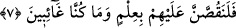

ne olduğu sorulur.
7. Ve onlara (olup bitenleri) tam bir bilgi ile mutlaka anlatacağız. Biz, onlardan
uzak değiliz.
“Ve elbette” mahşer gününde bütün peygamberler Cenab-ı Hakk’a: “Bizim
bildiğimiz yok, gizlileri bilen yalnız Sensin.” (el-Maide, 5/109) dedikleri vakit
“onlara” peygamberlere “olan biten her şeyi bilgi ile” yani onların içlerini ve
dışlarını bildiğimiz halde “anlatacağız. Zira biz” hiçbir durumda “onlardan uzak
değiliz” ki, onların amelleri ve halleri bize gizli kalsın.
Bil ki mahşerde bütün peygamberler ümmetlerinin akıbeti hakkında korkuya kapılırlar
ve “Allah’ım kurtar, Allah’ım kurtar.” diye yalvarırlar. Peygamberler, kendileri
açısından da korkuya kapılırlar. İçleri dalâlete düşürücü şüphelerle, dışları da şer‘î
hükümlere muhâlefet ile kirlenmeyip temizlenen ve korunan kimseler, o gün
emniyettedirler. Peygamberler onlara imrenirler. Çünkü Peygamberler, ümmetleri için
korku hâlindedirler.
Kim o gün Allah’a ihlasla inanmış, peygamberlerini tasdik etmiş, hayatı boyunca
şirkten ve sihirden uzak durmuş, müslüman kanı akıtmamış, Allah ve Rasûlü için nasihat
etmiş, Allah’a ve peygamberine itaat edenleri sevip isyan edenlere buğz etmiş bir
vaziyette ulaşırsa Rahman’ın arşının gölgesinde gölgelenir. Gam ve kederden uzak kalır.
Bu sayılanların aksini yapan ve bu günahlardan birini işleyen, kalbi değişen veya dini
hakkında şüpheye düşen, Allah dileyip de onu affedinceye kadar bin yıl ateş, üzüntü ve
azabta kalır.
Rivayet edilir ki, Kinde hükümdarlarından biri çevresindekilerle boş şeyler
konuşmayı çok sever, heva ve hevesine düşkünlüğü ile tanınırdı. Her türlü oyun ve
eğlenceye mübtela idi. Bir gün avlanmak için ya da başka bir maksadla yola koyuldu.
Derken arkadaşlarından ayrıldı. Öylece dolaşırken yalnız başına oturan bir adam gördü.
Bazı ölülerin kemiklerini toplamış karıştırıyor, alt üst ediyordu. Ona: “Ey adam, senin
maksadın nedir, bunlarla ne yapmak isityorsun? Senin bu üzüntülü halinin ve benzinin
solgunluğunun sebebi ne? Bu ıssız yerde tek başına oturmuş bu kemiklerle ne
yapıyorsun?” diye sordu. Adam şöyle cevap verdi: “Bunlar bana şunu hatırlatıyor: Ben
uzak bir yolculuğa çıkacağım. Beni karınca yuvası gibi karanlık yerin dibine çağıran iki
müvekkilim var. Toprak tabakalarının altında beni çürümeye ve helâk olanlarla
komşuluğa teslim edecekler.
Bütün korkunçluğuna, darlığına, haşerâtın benim etimi yiyecek olmasına ve bütün